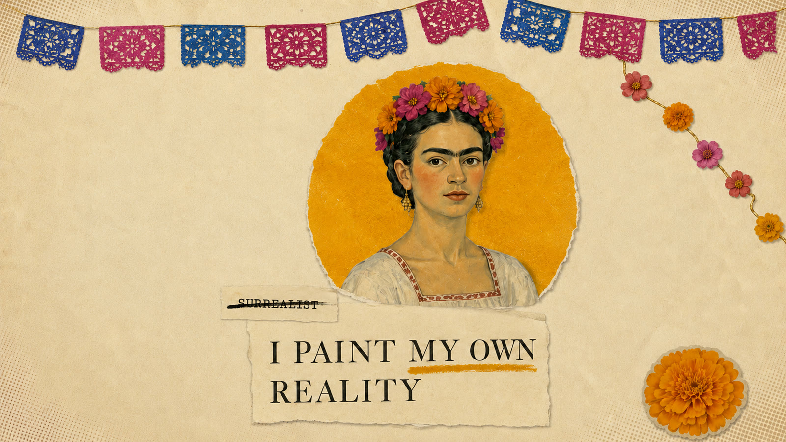

Paper, scissors, prompts: a Vox-style Frida Kahlo explainer
Thirty seconds of hand-torn paper collage — an editorial mini-documentary in the style of Vox, generated scene by scene with locked keyframes, a safety-filter playbook, and one gold crack that blooms into marigolds. The whole workflow ships as a Claude Code skill.
An explainer with an editorial eye
Vox-style videos live and die on art direction: torn paper, halftone archival photos, restrained motion. The challenge wasn't generating video — it was making a video model behave like a paper animator.
Keyframe pairs, never free generation
The core discovery: never let the video model invent a composition. Lock a START image and an END image first — images are cheap, videos are expensive — then ask the model only to travel between them. Drag the slider: this is scene one's journey, exactly as the model received it.
GPT Image 2 generates a START and END image per scene — reviewed and approved before any video is rendered.
Gemini Omni receives both frames — first is exactly frame 0, second is exactly the final frame — plus four timed beats describing the motion.
Scene N's end frame is generated image-to-image from scene N−1's actual last frame, so the paper world stays pixel-consistent.
ffmpeg joins the scenes with 0.35s crossfades; ElevenLabs narration is laid over the silent master in post.
Three scenes, one through-line
Hook, twist, payoff — each scene exactly ten seconds, each narration chunk sentence-safe, and the gold crack drawn in scene one returns blooming with marigolds in scene three.
The crash
“A bus crash shattered her spine at 18… So Frida Kahlo picked up a paintbrush — in bed.”
The mirror
“While the art world chased abstraction, Frida painted herself — 55 times. Not vanity… she put her pain on canvas when no one else would dare.”

The payoff
“Critics called her a surrealist. She shot back: I paint my own reality.”

Learned the expensive way
The rules below are written in credits spent on blocked and broken generations — the parts a tutorial would skip.
Gemini's safety filter rejects "Frida Kahlo" in any video prompt ("prominent public figure"). Names may only exist as text baked into keyframe images — GPT Image 2 renders text reliably and allows names.
Photographic likenesses of real people block generation too. Every depiction of Frida is hand-painted folk-art style — which passes the filter and looks better in collage.
Faces never move, blink or breathe. Cutouts move only as rigid paper pieces — slide, stamp, tilt, fade, rack focus. That restraint is what makes it feel editorial instead of uncanny.
Give the model three images and it treats them as loose references — redrawing faces and text. A scene needing a mid-point splits into two clips (4s + 6s) sharing that frame, joined with a 0.25s crossfade.
Max three elements at full contrast at once; a third of the frame stays empty paper; when something new enters, something old exits. Collage discipline is what keeps thirty seconds readable.
Every clip holds frame 0 for half a second and ends still — the final scene holds a full second. Editorial motion breathes; it doesn't churn.
The workflow is a skill
Everything above — the method, the safety playbook, the ffmpeg recipes — ships as a Claude Code skill in the repo. Ask for a Vox-style video on any topic, and the agent runs the whole pipeline: script, keyframes, approval gates, scenes, stitch.
▸ skill: vox-style-video loaded
▸ script → 3 sections · 10s each (hook → twist → payoff)
▸ scene 01 keyframes → awaiting your approval…
▸ generating motion between locked frames · stitching · narration
▸ one topic in — one editorial film out
Everything used, and what it did
Keyframes — renders text & names reliably
Motion between locked keyframe pairs
The 30-second narration, three 10s chunks
Crossfade stitching, frame extraction, audio lay
Runs the pipeline end to end via the skill
Workflow, prompts, skill — open source